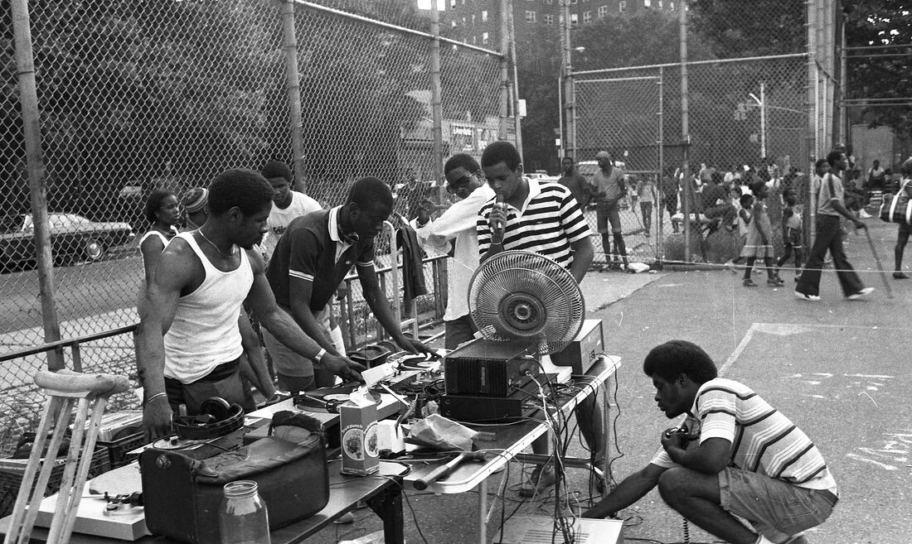

Új utcai zenész a Park Avenue-n – Fiatal Dj váltja az eddigi harmonikást
A Park Avenue-n lakók és járókelők egy új hangot vehettek észre a hét elején: a korábbi harmonikás helyét egy fiatal Dj vette át, aki a városi utcát zenével tölti meg minden nap délután.
„Igazi öröm hallgatni, ahogy a dobok es az elektronikai hangok dallamai összhangban szólnak a városi zajjal” – mondta Elena Rivera, egyik szomszéd. „Úgy tűnik, a környék egy új kis kulturális központtá vált.”
A Dj repertoárja változatos: klasszikus darabokat és jazz improvizációkat egyaránt játszik, így mindenki találhat kedvére valót. A helyiek örömmel fogadták az új előadót, aki minden nap várja az érdeklődőket.
A város képviselői azt ígérték, hogy támogatják a helyi utcazenészeket, és lehetőséget biztosítanak a fiatal tehetségeknek a Park Avenue és más forgalmas utcák kulturális gazdagítására.